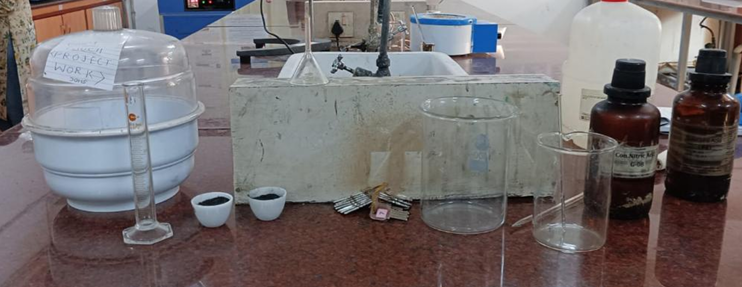
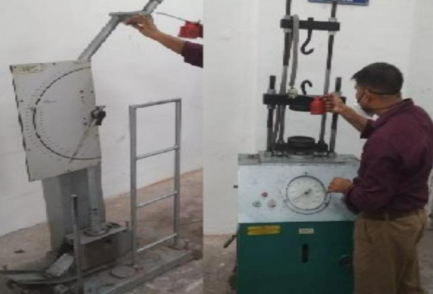

Project Overview
In this study, pure magnesium was reinforced with varying weight percentages (0.3%–1.8%) of multiwalled CNTs, prepared from organic waste like sugarcane, using stir casting. Mechanical properties were significantly improved, with the optimal CNT content found between 1.2-1.5% by weight for overall property enhancement.
Abstract
Carbon Nanotubes showing the exceptional mechanical properties and enhancement of the other properties have been of much interest in creating some advanced Composites. They exhibit excellent tensile strength and elastic modulus, which is stiffer than steel and three to five times lighter. Products in many fields, composites reinforced CNTs are top of the line.
Many concerns about global warming led to the sustainable production of products. In this paper, we have tried to make the CNT using Agriculture waste in a sustainable manner. We have used the way of burning the waste and using the chemicals that are commonly found in the laboratory. This process is repeated, and the sample quantity of CNT is increased. This sample is sent for testing and the results concluded that it is a Multi-walled Carbon nanotube. These CNT are used as a reinforcement in the preparation of Metal Matrix Composites, the Matrix being Magnesium. This Metal Matrix Composite is produced using stir casting.

Stir Casting Process
In this process first, we melted the Mg rods we obtained; their melting point is 630°C. After melting the Metal, we add the CNT as the reinforcements. We have added 0.5% of weight Mg of CNT. For this ratio, we have taken 1.25 gm of CNT and added it to the 250 gm of Mg. The stirring process was done for 7 mins for good results. After the Stir casting was done, the metal Matrix Composite is done in production.
Mechanical Testing
Mechanical testing such as compressive test and Tensile test of the composite is done using the Universal Testing Machine (UTM) from the Solid Mechanics lab of ASET in the Mechanical department.

Mechanical Testing Setup